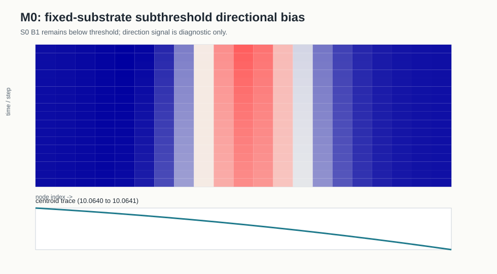
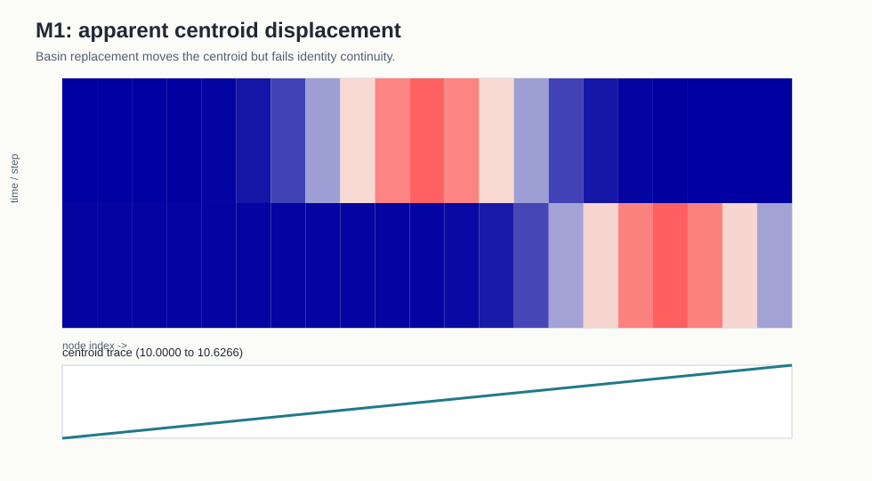
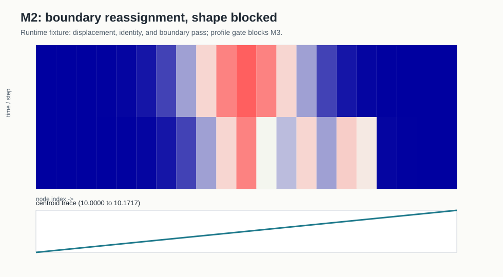
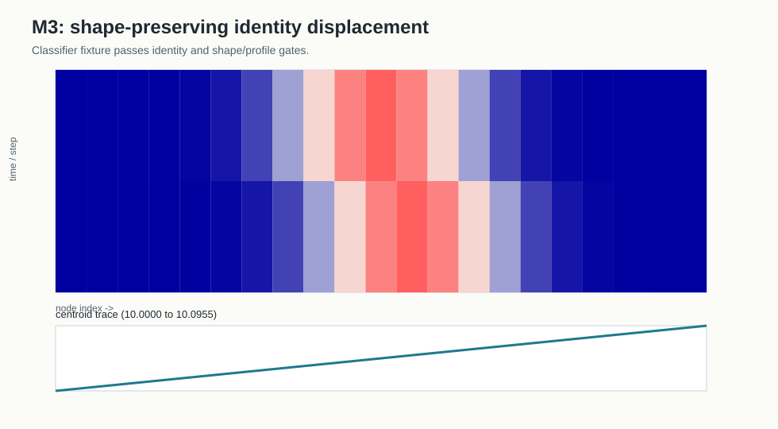
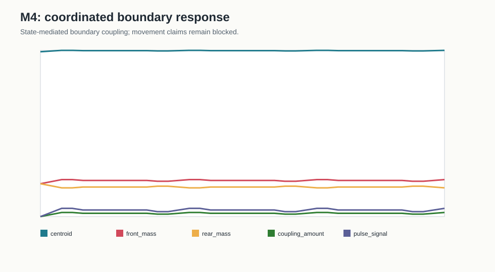
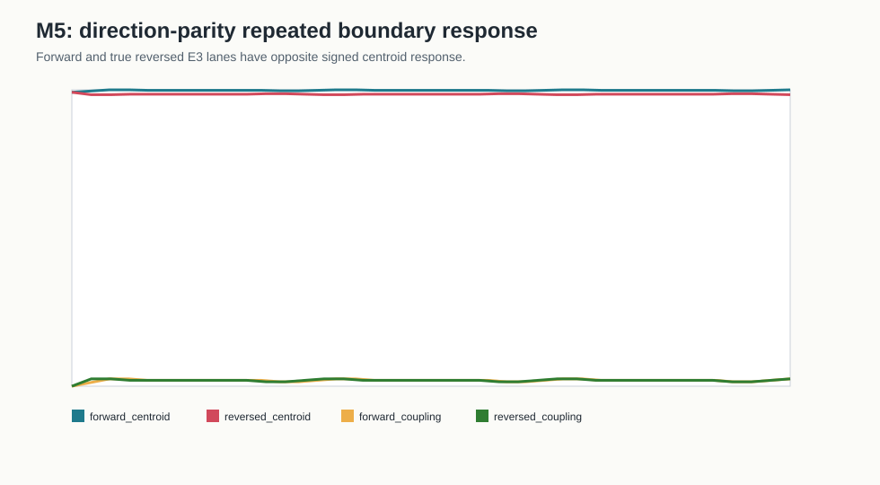
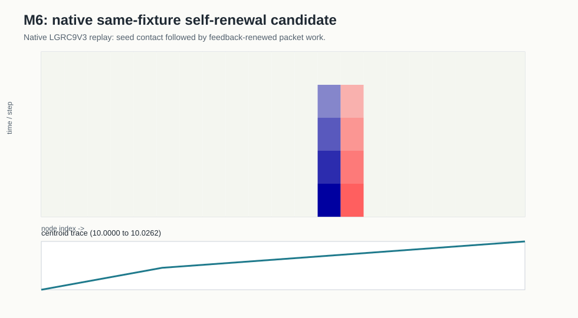

Visuals are supporting references only. Claims come from the N04 reports and validators.
Surface: experiment_local_fixed_substrate
Status: real_timeseries_existing_n04

Claim ceiling: no_movement_response_candidates
Surface: experiment_local_observable_fixture
Status: real_timeseries_existing_n04

Claim ceiling: M1_apparent_centroid_displacement_evidence_only
Surface: iteration_11b_runtime_shape_blocked_fixture
Status: runtime_timeseries_existing_n04

Claim ceiling: M2_identity_preserving_displacement_evidence_only
Surface: experiment_local_observable_fixture
Status: real_timeseries_existing_n04

Claim ceiling: M3_shape_preserving_identity_displacement_evidence_only
Surface: boundary_coupled_pulse_fixture
Status: real_timeseries_existing_n04

Claim ceiling: boundary_coupled_pulse_fixture_validation
Surface: native_lgrc9v3_true_reversed_e3_boundary_response
Status: native_lgrc9v3_telemetry_pack_plus_reference_svg

Native LGRC figures: experiments/2026-05-N04-grc9v3-movement-ladders/outputs/m_taxonomy_visual_reference/native_lgrc_visualizations/n04_m5_true_reversed_e3_boundary_response/visualization/trajectories.png, experiments/2026-05-N04-grc9v3-movement-ladders/outputs/m_taxonomy_visual_reference/native_lgrc_visualizations/n04_m5_true_reversed_e3_boundary_response/visualization/events.png
Claim ceiling: m5_direction_parity_supported_boundary_response
Surface: native_causal_pulse_substrate_surface
Status: native_lgrc9v3_telemetry_pack_plus_reference_svg

Native LGRC figures: experiments/2026-05-N04-grc9v3-movement-ladders/outputs/m_taxonomy_visual_reference/native_lgrc_visualizations/n04_m6_native_same_fixture_self_renewal/visualization/trajectories.png, experiments/2026-05-N04-grc9v3-movement-ladders/outputs/m_taxonomy_visual_reference/native_lgrc_visualizations/n04_m6_native_same_fixture_self_renewal/visualization/events.png
Claim ceiling: native_m6_same_fixture_self_renewal_candidate